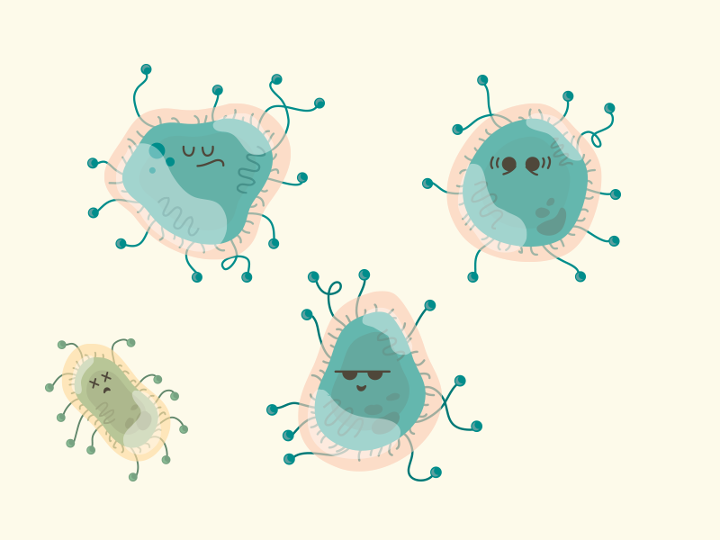

大小不固定的图片垂直居中
line-height和vertical－align：middle（近似居中） middle就是基线往上1/2，所以不同字体不同
IE8+支持

多行文字的垂直居中
把文字设置成inline-block(和图片一样)
line-height和vertical－align：middle（近似居中） middle就是基线往上1/2，所以不同字体不同
IE8+支持
line-height和vertical－align：middle（近似居中） middle就是基线往上1/2，所以不同字体不同line-height和vertical－align：middle（近似居中） middle就是基线往上1/2，所以不同字体不同line-height和vertical－align：middle（近似居中） middle就是基线往上1/2，所以不同字体不同